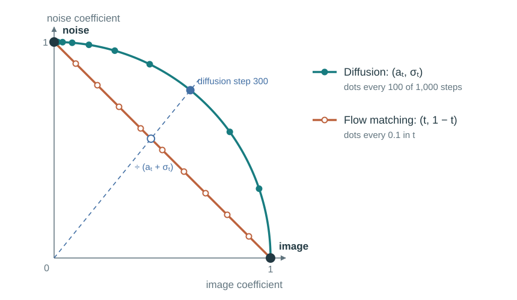
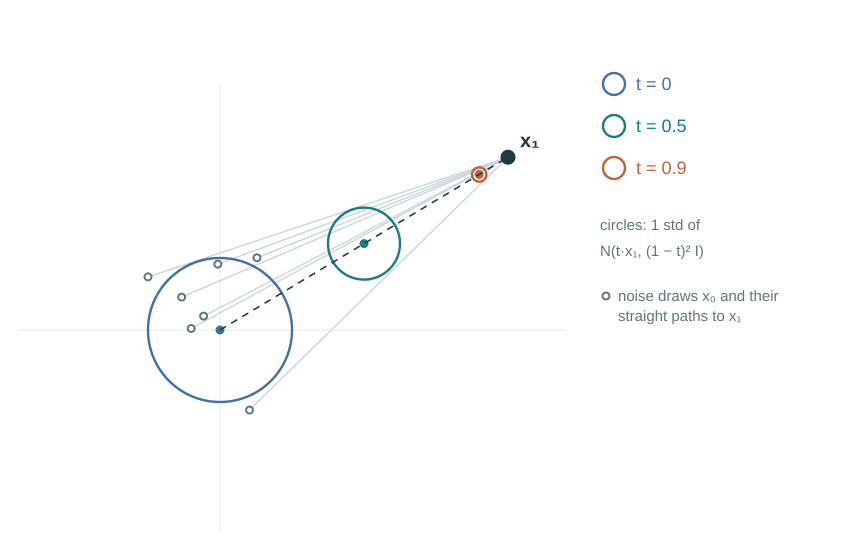
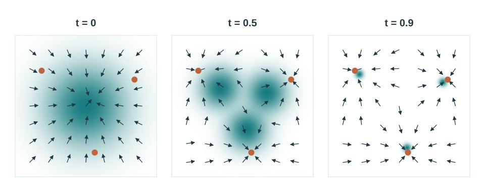

Straight Paths from Noise to Images
Flow matching: a chosen path, the velocity field that follows it, and a regression target you can compute
In the previous note I treated diffusion by first fixing a process that adds noise to an image and then learning to undo it. This note looks at the same generation problem from the side of flow matching. SD3 is trained on the straight path discussed here, so I needed this view before reading recent image generation models.
1 Flow matching at a glance: what changes from diffusion
The diffusion model in the previous note built the input at step \(t\) by mixing noise into a clean image \(x_0\):
\[ x_t=a_t x_0+\sigma_t\epsilon,\qquad a_t=\sqrt{\bar\alpha_t},\quad \sigma_t=\sqrt{1-\bar\alpha_t},\quad \epsilon\sim\mathcal N(0,I). \]
As \(t\) grows, the image coefficient \(a_t\) falls from 1 toward 0 and the noise coefficient \(\sigma_t\) rises from 0 toward 1. The two always satisfy \(a_t^2+\sigma_t^2=1\). Fix one image and one noise draw and move \(t\): \(x_t\) does not follow the straight line from \(x_0\) to \(\epsilon\). It traces an arc in the plane spanned by the two vectors. The speed along the arc is not constant either; the noise schedule \(\beta_t\) sets it interval by interval. Generation walks this process backward. DDPM also adds fresh noise at every step, so an actual generation trajectory is more jagged than this arc.

Flow matching reverses the order. Instead of first fixing a process that corrupts the image, it first chooses the path along which noise moves to an image. The simplest choice is a straight line. The time direction also changes: \(t=0\) is noise and \(t=1\) is the image. A sample moves along the line joining noise and image at a constant speed, so its velocity is the same at every time: image minus noise. On the diffusion arc the direction and speed change with time; on the straight path the training target comes out of one subtraction. Section 2 writes this path and velocity as equations.
From this point of view, what the model learns is a velocity field. A velocity field assigns a velocity to every position in space at every time: a sample here moves in this direction at this speed. Starting from one point and moving a little at a time along these velocities gives one trajectory, and the motion of all starting points taken together is called a flow. Generation draws one Gaussian noise sample, places it at \(t=0\), and moves in small steps along the velocity the model gives until \(t=1\). Mathematically this is numerical integration of an ODE, and the same noise always arrives at the same image.
The straight line, however, describes one fixed image and one fixed noise draw. During generation the model does not know which image it will arrive at. Many lines heading to different images can pass through one position in space, so the velocity used for generation is the average of the velocities of the lines through that position. When the position changes, the lines entering the average change too, so the actual generation trajectory that follows this average velocity bends. The training paths are straight, but the generation trajectories are not. The next two sections deal with this. Section 3 explains why following the average velocity still arrives at the designed distribution, and Section 4 explains why regressing on each pair’s velocity, without ever computing the average, still learns that average. The end of Section 5 shows why the bending means generation needs many steps.
The trajectories differ in shape, but the two paths mix the same ingredients. Both mix an image and Gaussian noise in time-dependent proportions. Divide the arc point \(a_t x_0+\sigma_t\epsilon\) by \(a_t+\sigma_t\) and it becomes exactly the point on the straight line whose image fraction is \(a_t/(a_t+\sigma_t)\). The difference between diffusion and flow matching is therefore the scale and the speed at which they pass through the same mixtures. What the model predicts can also be converted between noise and velocity. What flow matching brings is less a new principle than a way of exposing choices. Choosing a straight path makes the training target simple, and the path shape, the weight each time gets in training, the prediction target and the sampler each appear as a choice that can be made separately. Section 6 lays out these choices.
Flow matching does not require the source distribution to be Gaussian, but this note only covers the case that starts from Gaussian noise.
2 The easy case: a path and a velocity toward one image
First, the notation changes. From this section on I follow the flow matching convention: \(x_0\) is the starting noise and \(x_1\) is the image. In the previous note and in Section 1, \(x_0\) was the clean image, so the meaning is reversed. Time \(t\) runs continuously from 0 to 1, and generation goes from \(t=0\) to \(t=1\).
Let us turn the velocity field described in words in Section 1 into an equation. Write \(u_t(x)\) for the velocity a sample at position \(x\) at time \(t\) should follow. Over a very short time \(h\) the velocity barely changes, so the sample moves by \(h\) times that velocity:
\[ x_{t+h}\approx x_t+h\,u_t(x_t). \]
Chaining these steps gives the trajectory of one sample. As \(h\to0\) the relation becomes exact as the ODE
\[ \frac{dx_t}{dt}=u_t(x_t). \]
The ODE says that the velocity at the current position is the rate of change of position. Once the velocity field is fixed, each starting point has one trajectory. Write \(\psi_t(x_0)\) for the position at time \(t\) of the sample that started at \(x_0\). \(\psi_t\) is the function that takes a starting point and returns its position at time \(t\), and this function is called the flow. The velocity field sets the direction of motion at each instant; the flow records, for each starting point, where that motion has taken it.
Generation computes \(\psi_1\). Draw a noise \(x_0\), solve the ODE to \(t=1\), and you get \(\psi_1(x_0)\). For this to work as an image generator, one plausible result is not enough. When many noise draws are each carried by \(\psi_1\), the arrival points must form the same distribution as the data. The goal is therefore a velocity field \(u_t\) that carries noise from \(\mathcal N(0,I)\) to the data distribution. Finding such a \(u_t\) for the whole dataset at once is hard, so we start with the case where the destination image is fixed.
Pick one destination image \(x_1\) and choose the straight line from noise \(x_0\) to \(x_1\) as the path:
\[ x_t=(1-t)\,x_0+t\,x_1. \]
At \(t=0\) it is the noise itself, and at \(t=1\) it reaches \(x_1\) whatever noise it started from. Following one noise draw, the sample moves along the line at a constant speed. Now look at all noise draws at once. Since \(x_0\sim\mathcal N(0,I)\), the samples at time \(t\) form the distribution
\[ x_t\sim\mathcal N\!\left(t\,x_1,\;(1-t)^2 I\right). \]
The mean moves along a straight line from the origin to \(x_1\), and the standard deviation shrinks steadily from 1 to 0. The noise cloud slides toward \(x_1\) while contracting, until it becomes a single point at \(t=1\). This distribution, defined at every time, is called the conditional probability path for image \(x_1\) and written \(p_t(x\mid x_1)\).

Differentiating the path in time gives the velocity:
\[ \frac{dx_t}{dt}=x_1-x_0. \]
This is the “image minus noise” of Section 1. But it is written in terms of the starting noise \(x_0\). A velocity field must decide the velocity from the current position and time alone, so \(x_0\) has to be rewritten in terms of the current position. Solving the path for \(x_0\) gives \(x_0=(x_t-t\,x_1)/(1-t)\), and substituting it gives
\[ u_t(x\mid x_1)=\frac{x_1-x}{1-t}. \]
The formula reads as it looks. From the current position, head toward \(x_1\) at a speed equal to the remaining distance divided by the remaining time. So from anywhere, the sample reaches \(x_1\) exactly at \(t=1\). Conversely, solving the ODE with this velocity field reproduces the straight path we chose. In other words, this velocity field generates the conditional probability path \(p_t(x\mid x_1)\).
We wrote the same velocity in two forms because they are used differently later. The pair form \(x_1-x_0\) can be computed from a single noise–image pair, so it becomes the training target in Section 4. The position form \((x_1-x)/(1-t)\) answers the question “where should a sample passing through this position go?”, which is what Section 3 needs when it averages the velocities of several images at one position.
3 From one image to the data: averaging paths and velocities
Section 2 fixed the destination image. Now we draw that image from the data. The distribution symbols used in this section are below; \(q\) denotes the data distribution and \(p\) denotes distributions along the path from noise to data.
| Symbol | Meaning |
|---|---|
| \(q(x_1)\) | The data distribution: the probability density of drawing image \(x_1\) from the data. This is what the generative model ultimately has to imitate. |
| \(p_t(x\mid x_1)\) | The conditional probability path (Section 2): the density of a time-\(t\) sample at position \(x\), given that the destination image is \(x_1\). |
| \(p_t(x)\) | The marginal probability path: the density of a time-\(t\) sample at position \(x\), without fixing the destination image. |
| \(p(x_1\mid x_t=x)\) | The probability that a sample at position \(x\) at time \(t\) was heading to image \(x_1\). |
A time-\(t\) sample is made in this order: draw an image \(x_1\) from the data \(q\), draw a noise \(x_0\), and mix them at point \(t\) on the straight line of Section 2. The distribution \(p_t(x)\) of samples made this way combines the conditional path of each image, weighted by the probability of drawing that image:
\[ p_t(x)=\int p_t(x\mid x_1)\,q(x_1)\,dx_1. \]
Check the two ends of this path. At \(t=0\) every image’s cloud is the same \(\mathcal N(0,I)\) at the origin, so the mixture is \(\mathcal N(0,I)\). At \(t=1\) each cloud has shrunk to its own image, so the mixture is the data distribution \(q\). In between, as many clouds as there are images move from the origin toward their own images while shrinking, and they overlap. This mixture is the marginal probability path \(p_t(x)\) connecting the noise distribution and the data distribution.

Next is the velocity that makes samples follow this path. Take one sample at position \(x\) at time \(t\). Which image’s cloud did it come from? If several clouds cover that position, there are several answers. The probability \(p(x_1\mid x_t=x)\) that each image is the answer follows from Bayes’ rule: multiply \(p_t(x\mid x_1)\), how densely that image’s cloud covers \(x\), by \(q(x_1)\), the probability of drawing that image, and divide by the total density \(p_t(x)\):
\[ p(x_1\mid x_t=x)=\frac{p_t(x\mid x_1)\,q(x_1)}{p_t(x)}. \]
Since we cannot settle on a single destination, we set the velocity at that position to the per-image velocities averaged with these probabilities:
\[ u_t(x)=\int u_t(x\mid x_1)\,p(x_1\mid x_t=x)\,dx_1. \]
The average uses the position form \((x_1-x)/(1-t)\) from Section 2. Because it is in position form, we can hold \(x\) fixed and compare image candidates at the same position. And given the position \(x_t=x\), \((x_1-x)/(1-t)\) equals \(x_1-x_0\), so the same velocity can also be written in pair form:
\[ u_t(x)=\mathbb E\left[x_1-x_0\mid x_t=x\right]. \]
How this average changes with time shows what it does. Near \(t=0\) all clouds overlap almost completely near the origin. At any position, \(p(x_1\mid x_t=x)\) is then close to the data distribution \(q(x_1)\), and the velocity points toward the mean of the whole dataset. At \(t=0\) it is exactly \(u_0(x)=\mathbb E[x_1]-x\). As \(t\) approaches 1 the clouds shrink until almost only one covers a given position, and the velocity points straight at that image. Early in generation samples move toward the rough center of the data; later they narrow in on particular images.
But does averaging the velocities this way keep the path \(p_t(x)\) we designed? The groups heading to different images move at different velocities, and binding them to one velocity seems as if it should break something. Take a case with only two images, A and B. Suppose 100 particles are near position \(x\) at time \(t\), 30 heading to A and 70 heading to B. The A particles move at \(v_A\) and the B particles at \(v_B\). How the particle distribution around here changes in the next instant does not depend on which group each particle belongs to. It depends only on how much the particles move in total, and in which direction, and that total is \(30\,v_A+70\,v_B\). Now ignore the groups and move all 100 at one velocity \(v\). For the total to match, \(100\,v=30\,v_A+70\,v_B\), so \(v=0.3\,v_A+0.7\,v_B\). The 0.3 and 0.7 are exactly \(p(x_1\mid x_t=x)\). If the velocity is set this way at every position and time, the particle distribution changes exactly as it would if each group moved separately. So it follows \(p_t(x)\) at every time.
What matches is the shape of the distribution formed by all the particles. A single particle is a different story. A particle that was heading to A now also moves at \(0.3\,v_A+0.7\,v_B\), so it leaves its original straight line, and nothing guarantees it arrives at A. Still, the distribution of all particles is \(p_t(x)\) at every time and \(q\) at \(t=1\), and that is all generation needs. The end of Section 5 returns to what this bending means for the number of generation steps. One more note: this is not the only velocity field that produces the same \(p_t(x)\). The average velocity built here is one way to realize the marginal path from the conditional paths we chose.
The last problem is computation. The average needs \(p(x_1\mid x_t=x)\) over the whole dataset at every position, and that cannot be computed. Section 4 shows why the model learns this average without computing it.
4 Training without computing the average
Section 3 fixed the velocity field \(u_t(x)\) used for generation. Now we train a neural network \(u^\theta_t(x)\) to output it. \(\theta\) denotes the network weights, and the network takes position \(x\) and time \(t\) as input. The most direct way is to reduce the squared error to the target velocity. This loss is called the FM loss:
\[ \mathcal L_{\mathrm{FM}}(\theta)=\mathbb E_{t\sim\mathcal U[0,1],\;x_t\sim p_t}\left\|u^\theta_t(x_t)-u_t(x_t)\right\|^2. \]
The problem is the target \(u_t(x_t)\). As the end of Section 3 showed, computing it needs \(p(x_1\mid x_t=x)\) over the whole dataset at every position. So in place of the average we put the velocity of a single pair in the target. This loss is called the CFM loss:
\[ \mathcal L_{\mathrm{CFM}}(\theta)=\mathbb E_{t\sim\mathcal U[0,1],\;x_1\sim q,\;x_0\sim\mathcal N(0,I)}\left\|u^\theta_t(x_t)-(x_1-x_0)\right\|^2,\qquad x_t=(1-t)\,x_0+t\,x_1. \]
This loss can be computed. Draw an image from the data, a noise and a time, and the input \(x_t\) and the target \(x_1-x_0\) follow immediately. CFM stands for conditional flow matching: the target has been replaced by the velocity given a fixed image \(x_1\), the conditional velocity of Section 2.
But this target is not the velocity generation needs, because pairs passing through the same position have different targets. Go back to the example from Section 3. Of the training pairs passing through position \(x\), 30% are heading to A with target \(v_A\) and 70% to B with target \(v_B\). The network sees only \((x,t)\), so it cannot tell the two cases apart and can give only one output \(v\) at this position. The average error at this position is
\[ 0.3\,\|v-v_A\|^2+0.7\,\|v-v_B\|^2. \]
Setting its derivative with respect to \(v\) to zero gives the minimizing output \(v=0.3\,v_A+0.7\,v_B\), the same average velocity that Section 3 needed to keep the distribution. In general, when targets are scattered, the value that minimizes squared error is their mean. So even when trained with a different target for each pair, the network converges to output, at each position, the mean of the targets, \(u_t(x)=\mathbb E[x_1-x_0\mid x_t=x]\).
The relation between the two losses can be stated more precisely. At one position, let \(m\) be the mean of the targets and \(s\) the average squared distance of the targets from \(m\) (their variance). The mean squared error of an output \(v\) splits into \(\|v-m\|^2+s\). The first term is the error the FM loss measures; the second is how spread out the targets were to begin with, and has nothing to do with the network. The CFM loss is therefore the FM loss plus a constant that does not depend on \(\theta\), and the two losses have the same gradient. Using the computable loss instead of the uncomputable one gives the network the same training signal.
Because of this constant, the CFM loss does not go down to 0 in real training. As long as several pairs pass through one position, the targets are spread out, and even a perfect model is left with an error equal to that spread. The loss value mixes the model’s error with an irreducible spread in the targets, so its size alone says little about how well the model has learned.
Noise prediction in the previous note worked by the same logic. One noisy image could come from many combinations of images and noise, so the model learned not one target noise but the average of the noises possible at that position, and that average led to the score. In flow matching the quantity being averaged changes from noise to velocity.
Here \(t\) was drawn uniformly between 0 and 1. How often to draw each time is a separate choice that changes the weight of each time in the loss; Section 6 covers it. Section 5 turns what we have so far into code for one training step and one generation.
5 One training step and one generated image, in code
Here is the material so far as pseudocode. The code looks the same with VAE latents in place of images, so the data is simply called x1. The section numbers in the comments mark where each line comes from.
5.1 One training step
x1 = sample_data_batch() # §3: draw images from the data q
x0 = sample_standard_normal_like(x1) # §2: starting noise
t = sample_uniform(batch_size, 0.0, 1.0) # §4: t ~ U[0, 1], one per sample
xt = (1 - t) * x0 + t * x1 # §2: a point on the straight path
target = x1 - x0 # §2: pair-form velocity = §4: CFM target
pred = model(xt, t)
loss = mean_squared_error(pred, target) # §4: CFM loss
update_parameters(loss)The target uses the pair form \(x_1-x_0\). It has the same value as the position form \((x_1-x)/(1-t)\) but no division, so it is simpler. The path formula gives \(x_t\) at any \(t\) directly, so training never has to follow a trajectory from noise to image. Because training never solves the ODE, this is called simulation-free training.
Put this next to the diffusion training code from the previous note. To make the comparison easier I removed the VAE, the condition dropout for CFG and the variance term from that code. Each side keeps its own note’s notation, so x0 on the left is the image and x0 on the right is the noise.
# Diffusion (previous note)
x0 = sample_data_batch()
epsilon = sample_standard_normal_like(x0)
t = sample_uniform_timesteps(batch_size, 1, T)
xt = a[t] * x0 + sigma[t] * epsilon
target = epsilon
pred = model(xt, t)
loss = mean_squared_error(pred, target)
update_parameters(loss)# Flow matching (this note)
x1 = sample_data_batch()
x0 = sample_standard_normal_like(x1)
t = sample_uniform(batch_size, 0.0, 1.0)
xt = (1 - t) * x0 + t * x1
target = x1 - x0
pred = model(xt, t)
loss = mean_squared_error(pred, target)
update_parameters(loss)Line by line, only three lines differ. Time is drawn as a real number between 0 and 1 instead of an integer timestep from 1 to \(T\). The image–noise mixing ratio is computed directly as \(t\) and \(1-t\) instead of being read from the schedule tables a[t] and sigma[t]; this line is where the arc and the line of Section 1 differ. The target changes from noise to velocity. The rest is the same: draw data and noise, build the input in one step, and regress with MSE. Diffusion training could draw a single timestep and build its noisy input directly because of the same simulation-free property.
Both models take \(t\) as input. In flow matching this is because the velocity field changes with time, as Section 3 showed: at the same position it points toward the center of the data early on and toward a particular image later. \(t\) can be fed in the same way the DiT in the previous note received its timestep.
5.2 One generated image
x = sample_standard_normal(data_shape) # t = 0: noise
h = 1.0 / num_steps
for k in range(num_steps):
t = k * h
x = x + h * model(x, t) # §2: x_{t+h} ≈ x_t + h·u_t(x_t)
# §4: model output ≈ average velocity u_t(x)
sample = x # t = 1: approximately a sample from the data distributionThere is no destination image \(x_1\) during generation. The model looks only at the current position and time and outputs the average velocity it learned in Section 4. As Section 3 showed, following this velocity exactly keeps the distribution of samples at \(p_t(x)\) at every time, so they arrive at the data distribution at \(t=1\). The loop follows it only approximately, in finite steps; the last paragraph of this section shows how much that matters.
The only randomness in this loop is the first noise draw; no fresh noise is added inside the loop. The DDPM sampler in the previous note added fresh noise at every step and used a predicted variance to set its size. Neither appears here. This is how “the same noise always arrives at the same image” from Section 1 shows up in code. Training never solves the ODE; only generation does.
The update x + h * model(x, t) writes out the small step of Section 2 directly. It is Euler’s method, the simplest ODE solver. One Euler step assumes the current velocity holds until the next time. But as Section 3 showed, the average velocity changes with position and time, so generation trajectories bend, and the larger the step, the farther it strays from the true trajectory. Take the extreme of a single step (\(h=1\)). The velocity at \(t=0\) is \(u_0(x)=\mathbb E[x_1]-x\), so \(x_0+u_0(x_0)=\mathbb E[x_1]\): every noise draw lands on the mean of the data. This happens even if the model has learned the average velocity exactly. So although the training path is straight, generation needs many steps. The error in a generated result contains both the error from the model learning the wrong velocity and the error from steps that are too large. Other solvers, class and text conditions, and CFG are covered in Section 6.
6 What you can change after the basic form
So far we used the simplest setup as it is: start from a standard Gaussian, join noise and image with a straight line, draw \(t\) uniformly, predict the velocity, and generate with Euler. This section goes through what can be changed in that setup, one choice at a time, along with the line of the Section 5 code that each choice changes. Because each choice changes a different line, it becomes visible that they can be made independently.
6.1 Path shape
Generalizing the straight path gives a path that mixes noise and image with time-dependent coefficients \(\alpha_t\) and \(\sigma_t\):
\[ x_t=\alpha_t\,x_1+\sigma_t\,x_0. \]
The target velocity is the time derivative of this formula, where \(\dot\alpha_t\) and \(\dot\sigma_t\) are the time derivatives of the coefficients:
\[ \text{target velocity}=\dot\alpha_t\,x_1+\dot\sigma_t\,x_0. \]
Setting \(\alpha_t=t\) and \(\sigma_t=1-t\) gives the \(x_1-x_0\) used so far. Choosing them instead so that \(\alpha_t^2+\sigma_t^2=1\) gives the diffusion arc of Section 1, with only the time direction reversed. So diffusion enters as one of these choices. As Section 1 showed, the two paths pass through the same mixtures at different scales and speeds. Using that correspondence, a velocity field trained on one path can even be converted, after training, into the velocity field of another path. In code, the xt and target lines change.
6.2 Which times to train on more often
Section 4 drew \(t\) uniformly between 0 and 1. Drawing some interval more often gives the errors in that interval more weight in the loss. The path stays the same; only the per-time weight in the loss changes. SD3 used logit-normal sampling: draw \(u\) from a normal distribution and set \(t=\mathrm{sigmoid}(u)\). This draws middle times more often than the two ends. As Section 3 showed, near \(t=0\) the velocity points toward the data mean, and near \(t=1\) it narrows to one image. The middle interval between the two can be seen as the one with the most to learn. After comparing 61 training setups, SD3 reported the straight path combined with logit-normal(0, 1) as the most stable combination across conditions. In code, the one line that draws t changes.
6.3 What to predict
The model does not have to output the velocity directly. On the straight path, given \(x_t\) and a time \(0<t<1\), knowing any one of the velocity, the image and the noise determines the other two:
\[ x_1=x_t+(1-t)\,u,\qquad x_0=x_t-t\,u. \]
So the model can predict the image (\(x_1\)) or the noise (\(x_0\)), and the prediction can be converted to a velocity during generation. Noise prediction is the same as the epsilon prediction of the previous note. On Gaussian paths the score is proportional to the noise prediction, so the noise and score of the previous note and the velocity of this note are all connected by one-line formulas.
Changing the prediction target leaves the correct answer at each position pointing at the same thing, but changes the units of the loss. For example, the velocity error equals the image-prediction error divided by \(1-t\). So the same MSE weights times differently. The conversions also break down at the ends: near \(t=1\) an image prediction gives the velocity only through division by \(1-t\), and near \(t=0\) a noise prediction gives it only through division by \(t\), where \(x_t\) is still the noise itself. Since generation starts at \(t=0\), a noise-predicting model needs separate handling there. In code, the target line changes, and the generation loop gets one more conversion to velocity.
6.4 Conditions and CFG
To generate according to a class or a text \(y\), feed \(y\) to the model as well. The training code stays the same, and the model learns \(\mathbb E[x_1-x_0\mid x_t=x,y]\), the average velocity given the condition. As in the previous note, replacing \(y\) with an empty condition \(\varnothing\) with some probability during training lets one model learn both the conditional and the unconditional velocity. During generation the two are mixed:
\[ \tilde u_t(x\mid y)=u_t(x\mid\varnothing)+\gamma\left(u_t(x\mid y)-u_t(x\mid\varnothing)\right). \]
This has the same form as the CFG formula applied to noise prediction in the previous note, with the same guidance scale \(\gamma\); the only difference is that the quantity being mixed is velocity instead of noise. Exactly what distribution the samples come from when they follow this mixed velocity is still not known, though. In code, training gets a line that drops the condition, and generation gets a line that calls the model twice and mixes the two outputs.
6.5 ODE solver
The Euler method of Section 5 reads the velocity once per step. Higher-order solvers such as the midpoint method read it several times within a step. For example, reading the velocity once more at the middle of the step accounts for how the velocity changes in between. At the same number of steps, they follow a bending trajectory more closely. In exchange they call the model more times per step, so solvers should be compared at the same number of model calls, not the same number of steps. In code, the update in the generation loop changes.
Seen this way, each choice touches a different line of the Section 5 code. The path changes the xt and target lines, the time weighting the t line, the prediction target the target line and a conversion in generation, conditions and CFG the model input and the generation loop, and the solver the update. Section 1 said flow matching is less a new principle than a way of exposing choices; in code, those choices separate into different lines like this.
Appendix: notation and time conventions across papers
What confuses most when reading about flow matching is the time direction and the meaning of \(x_0\). Papers differ on whether noise or the image sits at \(t=0\), so \(x_0\) means noise in some papers and the image in others. This note follows Meta’s Flow Matching Guide and Code and Lipman et al. 2023. The table below puts the conventions of this note, the previous note and the SD3 paper side by side.
| This note (Meta guide; Lipman et al. 2023 with \(\sigma_{\min}=0\)) | Previous note (DDPM-style diffusion) | SD3 (Esser et al. 2024) | |
|---|---|---|---|
| Time | Continuous, \(t\in[0,1]\) | Integer timestep, \(t\in\{1,\ldots,T\}\) | Continuous, \(t\in[0,1]\) |
| Noise at | \(t=0\) | Near \(t=T\) | \(t=1\) |
| Image at | \(t=1\) | \(t=0\) | \(t=0\) |
| \(x_0\) means | Noise | Clean image | Clean image |
| Noise symbol | \(x_0\) | \(\epsilon\) | \(\epsilon\) |
| Mixing formula | \(x_t=(1-t)\,x_0+t\,x_1\) | \(x_t=a_t x_0+\sigma_t\epsilon\) | \(z_t=(1-t)\,x_0+t\,\epsilon\) |
| Training target | Velocity \(x_1-x_0\) | Noise \(\epsilon\) | Velocity \(\epsilon-x_0\) |
| Generation | \(t\): \(0\to1\) | \(t\): \(T\to1\) | \(t\): \(1\to0\) |
This note and SD3 write the same straight path with time running in opposite directions. Call SD3’s time \(s\); substituting \(s=1-t\) makes the two mixing formulas identical. Because time runs backward, the velocity only changes sign. That is why this note’s \(x_1-x_0\) (image minus noise) is SD3’s \(\epsilon-x_0\) (noise minus image). The symbol \(x_0\) has to be read differently as well: here it is noise, and in SD3 it is the image.
The correspondence between the previous note’s diffusion and this note appeared in Section 1 and Section 6. The previous note’s \(x_t=a_t x_0+\sigma_t\epsilon\) is the general path \(x_t=\alpha_t x_1+\sigma_t x_0\) of Section 6 with the time direction reversed and \(\alpha_t^2+\sigma_t^2=1\) kept. Dividing this point by \(a_t+\sigma_t\) gives the point on this note’s straight line with \(t=a_t/(a_t+\sigma_t)\). The previous note’s noise prediction \(\epsilon\) is the noise (\(x_0\)) prediction of Section 6.
The symbols used in this note:
| Symbol | Meaning | First used |
|---|---|---|
| \(x_0\) | Starting noise, \(x_0\sim\mathcal N(0,I)\) | Section 2 |
| \(x_1\) | Destination image (or latent) | Section 2 |
| \(x_t\) | Sample at time \(t\) | Section 2 |
| \(u_t(x)\) | Velocity field: the velocity at time \(t\) and position \(x\) | Section 2 |
| \(\psi_t(x_0)\) | Flow: the time-\(t\) position of the sample that started at \(x_0\) | Section 2 |
| \(h\) | Time interval of one Euler step | Section 2 |
| \(p_t(x\mid x_1)\) | Conditional probability path: the distribution at time \(t\) when the destination image is \(x_1\) | Section 2 |
| \(u_t(x\mid x_1)\) | Conditional velocity, \((x_1-x)/(1-t)\) | Section 2 |
| \(q(x_1)\) | Data distribution | Section 3 |
| \(p_t(x)\) | Marginal probability path | Section 3 |
| \(p(x_1\mid x_t=x)\) | Probability that a sample at position \(x\) was heading to image \(x_1\) | Section 3 |
| \(u^\theta_t(x)\) | Velocity predicted by the network; \(\theta\) are its weights | Section 4 |
| \(\alpha_t,\sigma_t\) | Image and noise coefficients of a general path | Section 6 |
| \(y,\varnothing\) | Generation condition (class, text) and the empty condition | Section 6 |
| \(\gamma\) | CFG guidance scale, based at the unconditional velocity | Section 6 |
References and figure provenance
- Yaron Lipman et al. Flow Matching for Generative Modeling, 2023.
- Yaron Lipman et al. Flow Matching Guide and Code, 2024.
- Patrick Esser et al. Scaling Rectified Flow Transformers for High-Resolution Image Synthesis, 2024.
- Jonathan Ho, Ajay Jain, and Pieter Abbeel. Denoising Diffusion Probabilistic Models, 2020.
- Jonathan Ho and Tim Salimans. Classifier-Free Diffusion Guidance, 2022.
The diffusion notation and code follow the previous note.
All figures in this note are explanatory diagrams drawn by the accompanying figure script, which uses only the Python standard library. Figure 1 plots the two path formulas with the DDPM linear schedule. Figure 2 plots \(p_t(x\mid x_1)\) for one point in two dimensions, with seven noise draws from a fixed seed. Figure 3 evaluates \(p_t(x)\) and the average velocity \(u_t(x)\) in closed form for three equally likely points. None of them is the output of a trained model. The code in Section 5 is pseudocode. The SD3 comparison of training setups in Section 6 is reported from the SD3 paper, not from experiments run for this note.